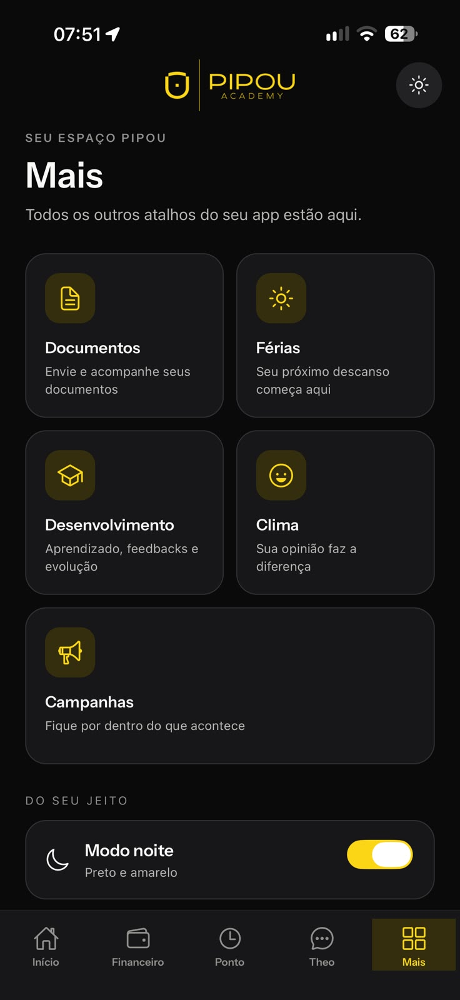
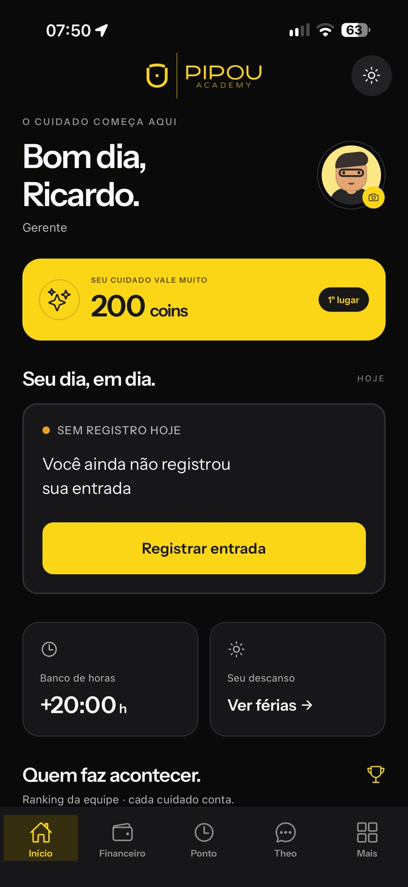
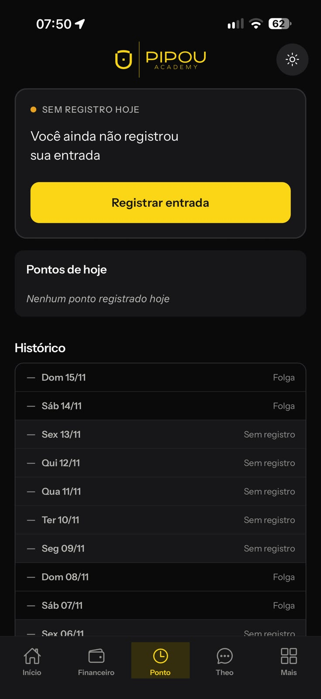
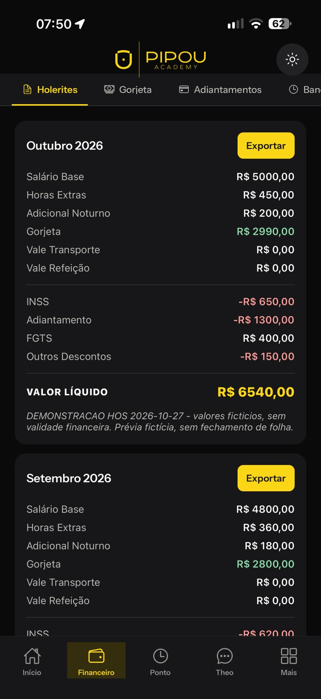
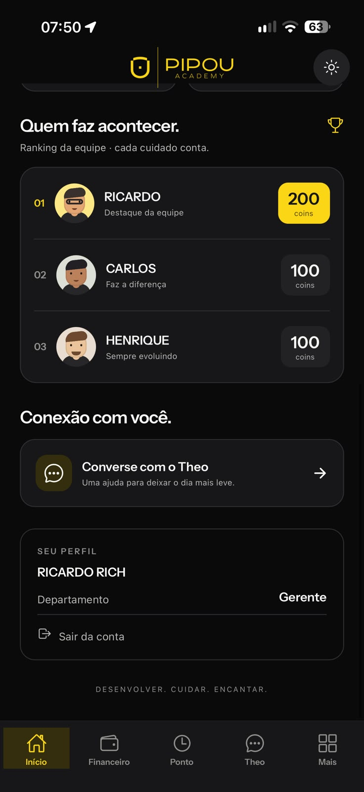

Clareza para começar.
Uma experiência organizada por rotinas de trabalho, com caminhos que fazem sentido para quem cuida de pessoas.
A Pipou conecta a gestão de pessoas à rotina da sua equipe, com um sistema pensado para ser fácil de usar e reconhecimento que ganha valor com o Mr. Coin.


Além das funções, importa como elas chegam a quem usa. A Pipou coloca a facilidade de uso no centro da experiência.
Uma experiência organizada por rotinas de trabalho, com caminhos que fazem sentido para quem cuida de pessoas.
A proposta reúne a jornada do colaborador para facilitar a consulta e o acompanhamento de cada etapa pelo RH.
Com consultas e atalhos no aplicativo, o colaborador encontra informações da rotina e participa da própria jornada.
Registro de entrada, marcações do dia e histórico em uma tela. Mais visibilidade para o colaborador sobre sua jornada.

Consulta por mês, rubricas, descontos e opção de exportar. Informações organizadas para facilitar a compreensão.

Coins, destaques e reconhecimento da equipe. Uma experiência conectada à proposta de valorização do Mr. Coin.

Capturas demonstrativas fornecidas pela Pipou. Recursos, regras e integrações são definidos no escopo de cada contratação.
Explore as áreas da plataforma e encontre as funções que fazem sentido para sua equipe e sua operação.
Um ecossistema em construção, com uma visão completa. Os módulos apresentados fazem parte do plano de evolução da Pipou. Converse com a gente para conhecer a disponibilidade e o escopo de cada solução.
Explore as funções previstas em cada módulo.
Um caminho completo, da contratação aos resultados.
Organização de vagas, candidatos e entrevistas, com triagem assistida e revisão humana. A proposta conecta a aprovação do candidato à admissão e ao acompanhamento da contratação.
Cadastro, documentos, onboarding, movimentações e histórico do colaborador. O objetivo é centralizar informações e distribuir as tarefas de cada etapa entre RH e gestores.
Planejamento de turnos, acompanhamento da jornada, ajustes e banco de horas. A visão combina disponibilidade, necessidades da operação e regras aplicáveis ao controle de jornada.
Pré-folha, conferências, benefícios, holerites e informações de remuneração. A arquitetura prevê integração de cálculos e acompanhamento das divergências antes do fechamento.
Indicadores por cargo, equipe e unidade, avaliações por competências e feedbacks. Planos de desenvolvimento conectam as oportunidades de melhoria à evolução profissional.
Pesquisas de clima, acompanhamento da integração e análise dos motivos de saída. A proposta transforma os sinais da equipe em planos de ação com responsáveis e acompanhamento.
Cursos, conteúdos, avaliações e certificações, com trilhas por função. A formação cria uma base comum de cultura e operação e dá visibilidade aos próximos passos de carreira.
Campanhas com objetivos, critérios de elegibilidade e orçamento. O Mr. Coin conecta conquistas validadas à experiência de coins e recompensas, conforme as regras de cada programa.
Avisos, comunicados, celebrações e conteúdos por unidade ou função. O objetivo é vincular a comunicação a ações como leitura, treinamento e confirmação de procedimentos.
Organização de documentos, vencimentos, treinamentos obrigatórios e tarefas de conformidade. A proposta inclui acompanhamento de prazos e registros para auditoria.
Agentes de IA para apoiar análises de jornada, custos, retenção e desenvolvimento. Recomendações e execução de processos seguem permissões, aprovação humana e rastreabilidade.
Indicadores de equipe, turnover, custos, horas extras, treinamentos e campanhas. A visão executiva permite acompanhar períodos e unidades e entender a origem dos resultados.
Consultar informações, acompanhar a jornada, aprender e visualizar seu reconhecimento no aplicativo.
Usar uma experiência pensada para facilitar o trabalho: encontrar informações, organizar processos e acompanhar a equipe.
Reunir indicadores de pessoas e resultados para orientar decisões e acompanhar a evolução das unidades.
Visão funcional do ecossistema. Escopo, integrações e disponibilidade de cada módulo são alinhados na apresentação comercial.
A rotina de quem faz acontecer merece
uma experiência simples, clara e conectada.
Uma visão pessoal da rotina: identificação do colaborador, saldo de coins, registro de entrada, banco de horas e acesso às férias.
Capturas do aplicativo fornecidas pela Pipou. Telas e valores apresentados para demonstração; a disponibilidade de recursos depende do escopo contratado.
Quem aprende, colabora e faz a diferença merece ser reconhecido. O Mr. Coin é o motor de recompensas pensado para conectar essas conquistas a uma experiência de valorização.
A Pipou Academy dá o primeiro passo dessa jornada: formação de base para a hospitalidade, com cultura, postura e método no centro da operação.
Uma unidade ou uma rede inteira.
A visão é conectar cada ponta da operação.
Do salão à cozinha, desenvolvimento e reconhecimento no ritmo da casa.
Vamos conversar ↗Uma experiência de equipe à altura da experiência que você entrega ao hóspede.
Vamos conversar ↗Cultura, preparo e metas com sentido para quem está na linha de frente.
Vamos conversar ↗Um padrão compartilhado, com espaço para a realidade de cada unidade.
Vamos conversar ↗Entendemos sua equipe, seus desafios e o que você quer transformar.
Apresentamos as soluções disponíveis, percorremos a rotina do RH e mostramos a experiência do aplicativo.
Alinhamos os próximos passos, os responsáveis e o acompanhamento da jornada.
A contratação é definida a partir da realidade da sua operação e da disponibilidade das soluções. Na conversa comercial, alinhamos o que entra na proposta e como será a implantação.
Solicitar uma proposta ↗Entendemos o tamanho da equipe, os perfis de acesso e a estrutura da operação.
Definimos as rotinas prioritárias, os recursos disponíveis e as conexões necessárias.
Combinamos escopo, próximos passos e condições comerciais antes de iniciar.
A facilidade de uso é um dos diferenciais centrais da Pipou. A experiência é pensada em torno das rotinas de quem cuida de pessoas, com organização e caminhos claros. Na demonstração, vamos percorrer as tarefas que seu RH precisa realizar e apresentar o escopo disponível para sua operação.
A Pipou é um ecossistema em desenvolvimento para conectar pessoas, operação, aprendizagem e reconhecimento. Sua visão reúne 12 módulos, da contratação à gestão executiva, com a Pipou Academy e o Mr. Coin integrados à jornada.
Os módulos apresentados são a visão de evolução do produto, conforme o blueprint da Pipou. O portal da Academy já pode ser conhecido. A disponibilidade comercial, as integrações e os prazos dos demais módulos são alinhados diretamente com a equipe.
A proposta é permitir uma contratação conforme a necessidade da empresa: gestão, Mr. Coin Rewards ou uma experiência completa. O escopo e as condições são definidos em uma conversa com a equipe, considerando a disponibilidade de cada solução.
A proposta conecta eventos validados, como treinamentos e conquistas, a campanhas com critérios e orçamento definidos pela empresa. O crédito de COIN$ depende de autorização. As condições de uso, elegibilidade e catálogo serão definidas para cada programa.
Preencha o formulário abaixo para preparar uma mensagem no WhatsApp comercial ou entre em contato por e-mail. Vamos entender a realidade da sua operação e apresentar os próximos passos.
Conte como funciona seu RH. Vamos apresentar as soluções disponíveis e conversar sobre uma experiência mais simples para sua equipe.
ricardo@orkestri.net ↗